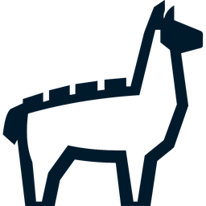

Yükleniyor…
Girdiğiniz giderler doğrudan firmanın gider defterine işlenir. Yanlış girişi 24 saat içinde buradan silebilirsiniz.

Girdiğiniz giderler doğrudan firmanın gider defterine işlenir. Yanlış girişi 24 saat içinde buradan silebilirsiniz.